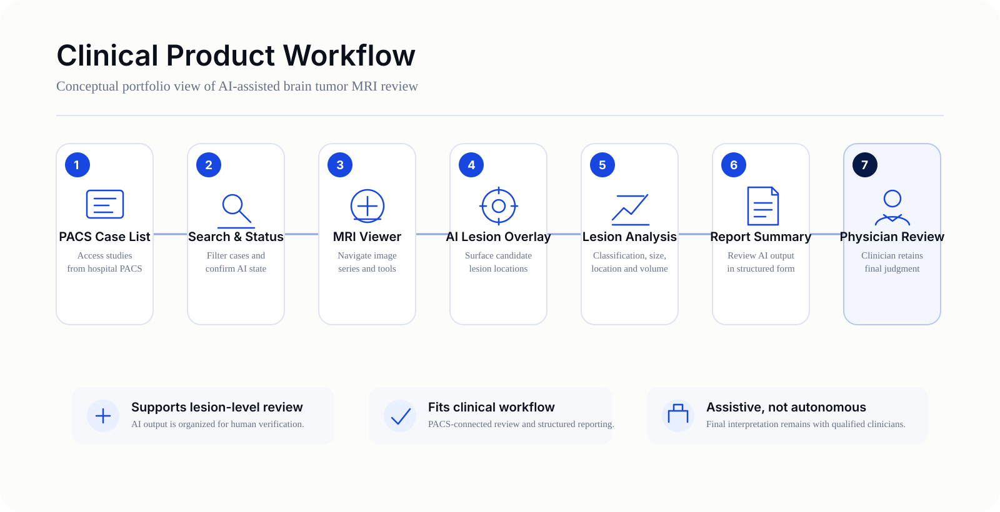
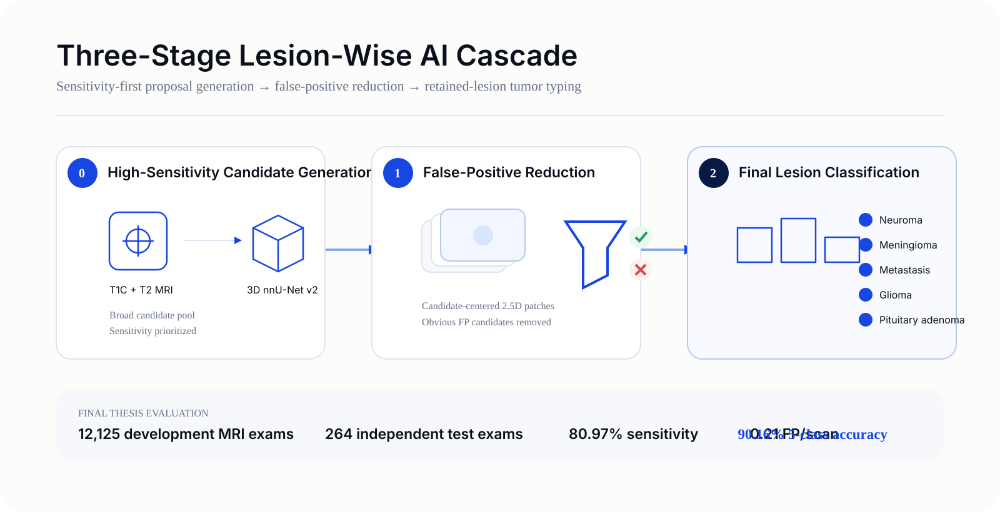

I helped translate brain-tumor MRI research into a workflow designed for real clinical use, while coordinating the product, validation, and regulatory work needed to move toward deployment.

The challenge
A strong model is not yet a deployable product. A clinically useful system has to fit the radiologist's review workflow, surface AI results in an interpretable way, support validation, and generate evidence that technical, clinical, and regulatory stakeholders can trust.
My role
I worked across product management, project leadership, clinical translation, and regulatory execution.
Approach
- Translate clinical workflow needs into product scope and validation priorities.
- Connect model performance with evidence needed for hospital and regulatory review.
- Coordinate technical, clinical, business, and regulatory stakeholders.
- Build repeatable documentation and tracking processes.
Product + technical decisions
The underlying research used a lesion-wise cascade rather than treating detection as a single end point.


Research translated into public evidence
The lesion-wise cascade was presented at MIDL 2026, providing a public research artifact behind the technical foundation of this product story.
Results & impact
- Supported a clinical AI workflow spanning two medical centers.
- Led product work through TFDA submission.
- Coordinated physicians, engineers, executives, and regulatory stakeholders.
- Supported 2024 Taiwan Medical Informatics Connectathon Level I capability-statement validation.